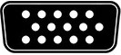

-
Grafický procesor - GPU (Grafic Processing Unit) je mikroprocesor pre 2D a 3D renderovanie. Hlavným parametrom GPU je frekvencia jadra – rádovo v GHz.
VPU (Vizual Processing Unit) nové označenie pre grafický procesor. Výkonný grafický procesor odbremeňuje CPU,
informácie ktoré nemusí spracovať CPU spracováva grafický procesor čím odbremeňuje aj operačnú pamäť. Súčasné grafické karty
majú okrem zobrazovania dát v monitore za úlohu aj prehrávať video (plynule v HD), vytvárať realistické 3D scény, pracovať so zložitými matematickými rovnicami.
-
Grafická pamäť - Je to špeciálna pamäť umiestnená na grafickej karte, označujeme ju ako VRAM (VideoRAM) GDDR.
-
Video BIOS - firmware – základný program ovládajúci operácie na grafickej karte,
vykonáva inštrukcie dávané grafickému procesoru od CPU. Má na starosti správu pamäti, časovanie napätia, atď…
-
RAMDAC - (Random Access Memory Digital to Analog Convector) – prevádza digitálny signál z grafického procesora do analógovej formy pre monitor.
-
Pasívne chladenie - Zabezpečujú ho hliníkové chladiče upevnené na samostatnej grafickej karte.
-
Aktívne chladenie - Je zabezpečované ventilátormi pripojenými k hliníkovým chladičom.
-
Vstupné rozhranie.
-
Výstupné konektory.
| SVGA |
 |
| DVI |
|
| S-video |
|
| Display port |
|
| HDMI |
|
| USB-C |
|
-
SVGA - konektor určený pre analógové VGA. Problém pri jeho používaní je rušenie, deformácia obrazu, deformácia bodu.
-
DVI - digitálny výstup určený pre novšie LCD a plazmové display-e, využíva natívne rozlíšenie to znamená, že každý bod je jednoznačne určený.
-
S-Video - modulovaný video signál pre televíziu a video.
-
Display port - digitálny výstup aj so zvukom.
-
HDMI - výstup s vysokým rozlíšením aj so zvukom.
-
USB-C - univerzálny kábel pre napájanie, prenos zvuku a videa.
Zbernice pre grafické karty:
-
ISA - 16 bitová architektúra, 8 MHz, používaná od 1981, dominantná technológia v 80-tych rokoch
-
MCA - 32 bit, 10 MHz. 1987, nekompatibilná s ISA
-
EISA - 32 bit, 8.33 MHz. 1988, kompatibilná s predchádzajúcimi typmi
-
PCI - 32 bit, 33 MHz. nahradila všetky zbernice od 1993. Zaviedla rýchle dynamické prepojenie medzi zariadeniami na zbernici bez nutnosti nastavovania. Plná podpora Plug and Play
-
PCI-X - zvýšila PCI na 64 bit a 133 MHz.
-
AGP - Vyčlenená len pre grafiku, 32 bit, 66 MHz.
-
PCI-Express - 2004, 2006 PCIe 2.0, 2010 PCIe 3.x, 2011 PCIe 4.x, 2020 PCIe 5.x